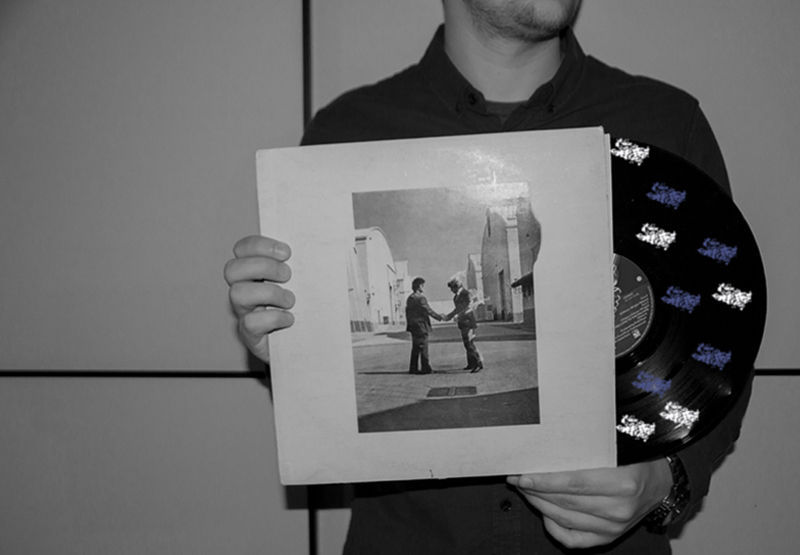
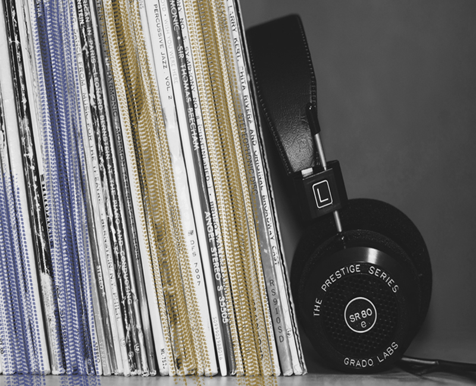
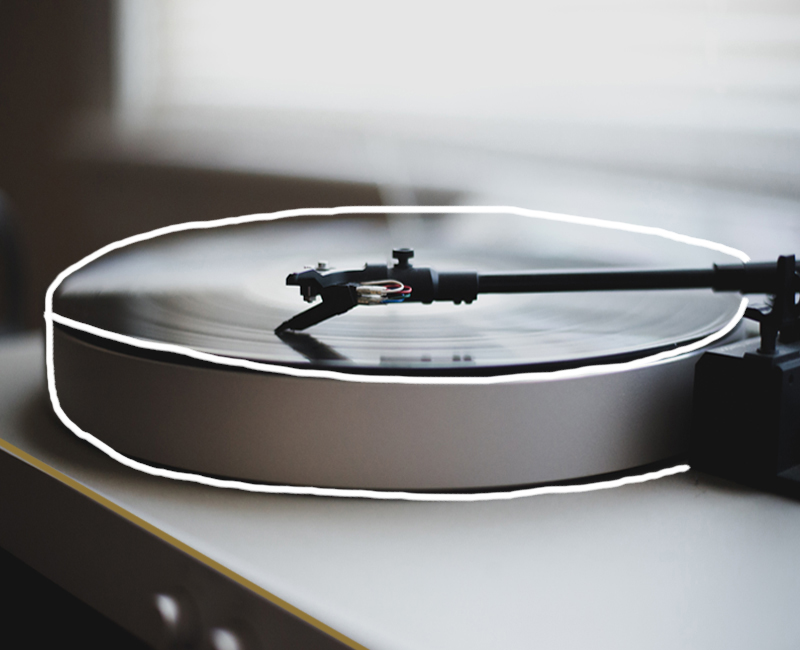
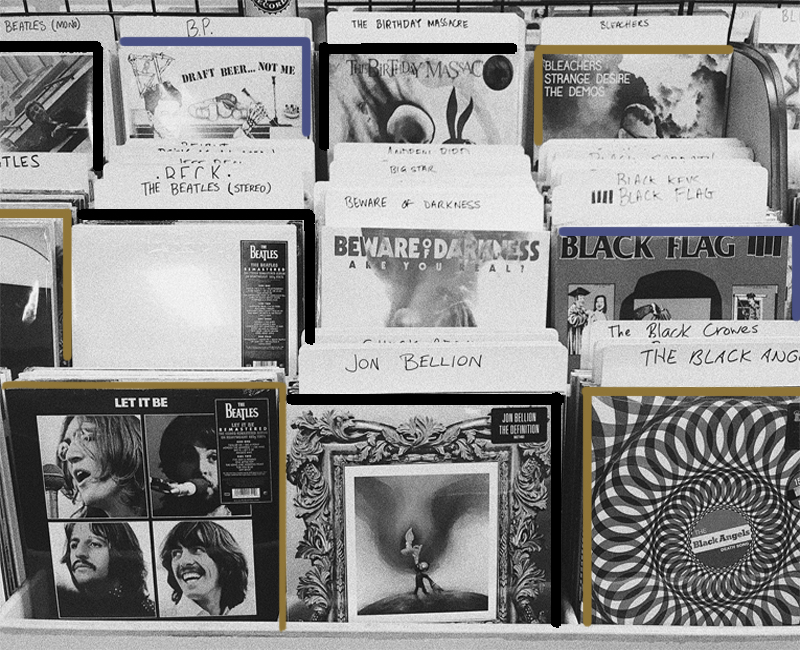
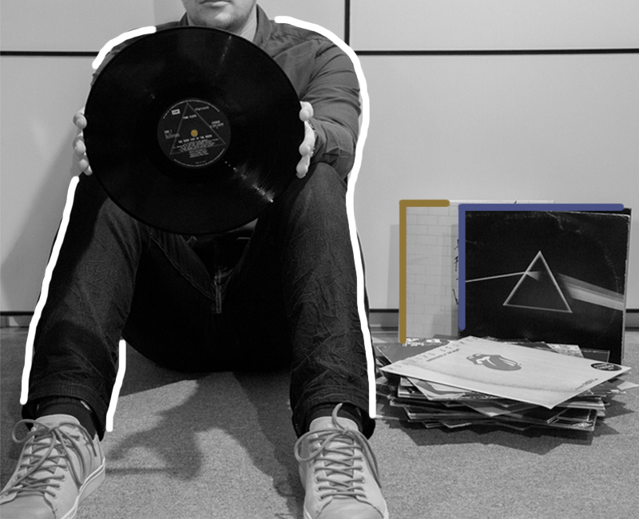
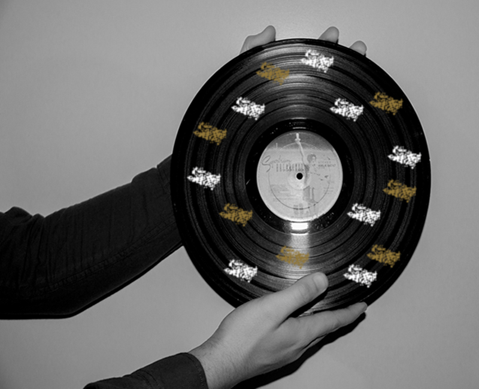
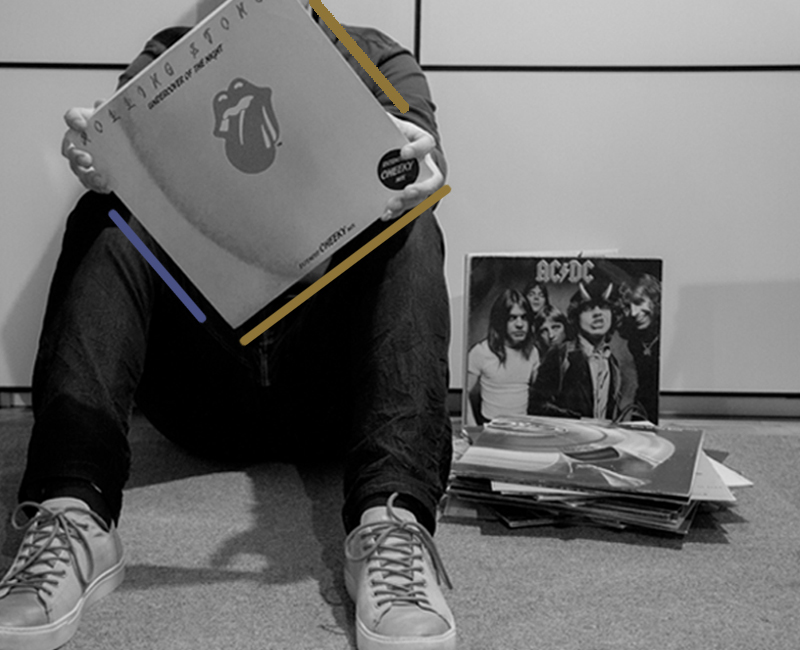

00s
What would the 2000s look like if records first came out?

Instead of using your iPod to play some music today, what if you had a whole collection of records for your music?



Same thing as buying CDs in the 80s or cassettes in the 90s; users will have to purchase all records to listen to music. But with todays technology and internet, users will be able to download their own songs onto records.



In order to listen to records, users will have to listen to them where there are record players. Record players will also have the option to plug in headphones. Users cannot listen to their records on the go. They will also have to manually flip the record if they want to listen to more songs.